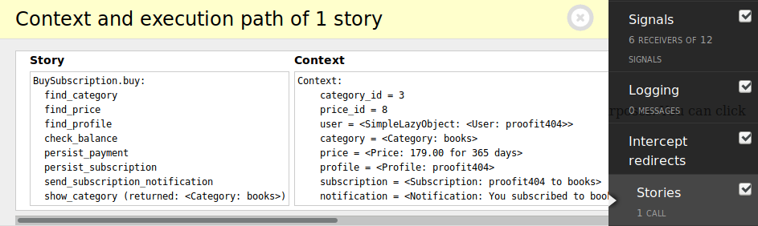

Why¶
Good code is easy to understand and change. We build stories with this
constrains in mind.
stories force you to write structured, understandable code with right
separation of concerns and responsibilities.
Let's consider common troubles you meet in development.
Micro framework¶
Micro frameworks don't offer too much structure to your project. The main goal is flexibility. And you're mostly on your own when it comes to organizing your code.
Most of the times you will end up with two problems:
- Long view functions.
- Lots of
ifstatements inside this functions.
There is a lot of complexity in it.
Let's consider following view function.
from flask import Flask
app = Flask('app')
@app.route('/subscriptions/') # 85
def buy_subscription(page): # 86
# ...
if props[-1].endswith('$'): # 121
props[-1] = props[-1][:-1] # 122 <-
# 123
We do not have any information about this strange comparison expression.
Let's consider we should process this data in a different way to complete our current task.
We decide to change this expression.
Of course, we test all possible scenarios we can imagine.
But after some time this error would happen in the production:
Traceback (most recent call last):
File "views.py", line 1027, in buy_subscription
ZeroDivisionError: division by zero
Turns out there were a lot more variants of incoming data than we can imagine. So our change failed in several business scenarios.
This happens because our code wasn't written to help us understand it.
Macro framework¶
On the other side, there are a lot of technologies with strong opinions on how to structure programs written with their help.
This approach also has its own cost.
- You need method flowchart to understand data flow in your system.
- Zig-zag traceback problem. It's hard to figure out the actual execution path because your code always mixed with the code of the framework.
- Framework internals leak into your code base.
Let's consider this view:
from rest_framework import viewsets
from django_project.filters import SubscriptionFilter
from django_project.models import Subscription
from django_project.permissions import CanSubscribe
from django_project.serializers import SubscriptionSerializer
class SubscriptionViewSet(viewsets.ModelViewSet):
queryset = Subscription.objects.all()
serializer_class = SubscriptionSerializer
permission_classes = (CanSubscribe,)
filter_class = SubscriptionFilter
The only thing we have clue about - it is somehow related to the subscription to our service.
But it does not tell us:
- What exactly does this class do?
- How to use it?
We need to keep framework documentation close to the sources to figure this out.

After a few hours of digging, we will figure out there are about 17 different ways to interact with this view.
When we go to the SubscriptionSerializer class, we expect to see there a
mapping of fields from the database model to the JSON object.
And we actually do.
>>> from rest_framework.fields import IntegerField
>>> from rest_framework.serializers import Serializer
>>> class SubscriptionSerializer(Serializer):
... category_id = IntegerField()
... price_id = IntegerField()
But in addition we see this method:
>>> def recreate_nested_writable_fields(self, instance):
... for field, values in self.writable_fields_to_recreate():
... related_manager = getattr(instance, field)
... related_manager.all().delete()
... for data in values:
... obj = related_manager.model.objects.create(
... to=instance, **data)
... related_manager.add(obj)
Once again we have no idea...
- What was the actual reason to put this method there?
- Which one of the 17 ways to interact with the view does it affect?
- What framework state it expects to work with?
It will take a few hours more to answer this questions.
Conclusion¶
In both projects built with micro and macro frameworks we end up with
actually the same situation:
- Our code is fragile. We afraid to change it.
- It is hard to reason about.
- It is time-consuming to work with it.
But there is a solution for it!
Business logic¶
The main problem with both approaches - it is completely unclear what the application actually does. What problems it is trying to solve?
Most frameworks are busy with forms, serializers, transport layers, field mappings. And all these implementation details are not the right abstractions for decision making.
Usually, our first thought will be moving our business logic from the view into a function.
>>> def buy_subscription(category_id, price_id, user):
...
... category = find_category(category_id)
... price = find_price(price_id)
... profile = find_profile(user)
... if profile.balance < price.cost:
... raise ValueError
... decrease_balance(profile, price.cost)
... save_profile(profile)
... expires = calculate_period(price.period)
... subscription = create_subscription(profile, category, expires)
... notification = send_notification('subscribe', profile, category)
The author definitely has a few good points to write code this way.
It is short, has clear names and intent.
If you enjoy writing code like this, stop reading and go write it. I'm serious!
But we see a few disadvantages in it.
- Growth problem. In real life, functions like this will have ~50 lines of
code, a lot of variables and nested
ifstatements. Eventually, a programmer will decide to hide its complexity somewhere. - Convert to the object. The main intent is hiding ~50 variables in ~50 object attributes. This will improve the readability of the main method. But will harm the understanding of where data came from.
- Mixins. At some point, we will like to reuse parts of our business logic. A mixin is the most common way to make code with classes reusable. But it will lead to even more implicit source of data. Attributes appear from nowhere.
- Top-down architecture. We call functions directly. They call other low level functions directly. Our business logic has a very high coupling with the way we talk to the database, SMS gateway or notification server. This approach has zero flexibility.
There is a better way.
DSL¶
Wouldn't it be nice if we can just read business logic as it was intended?
>>> from stories import story, arguments
>>> class Subscription:
...
... @story
... @arguments("category_id", "price_id")
... def buy(I):
...
... I.find_category
... I.find_price
... I.find_profile
... I.check_balance
... I.persist_payment
... I.persist_subscription
... I.send_subscription_notification
Wouldn't it be nice to have a clear understandable state?
(Pdb) ctx
Subscription.buy:
find_category
check_price
check_purchase (PromoCode.validate)
find_code (skipped)
check_balance
find_profile
Context:
category_id = 1318 # Story argument
user = <User: 3292> # Story argument
category = <Category: 1318> # Set by Subscription.find_category
Wouldn't it be nice to know which business scenario was executed by every line in the tests?

Wouldn't it be nice to see the same details in the debug toolbar?

Wouldn't it be nice to have it when production fails?

Interesting, isn't it? Check out Definition guide to learn more.
— ⭐️ —
The stories library is part of the SOLID python family.